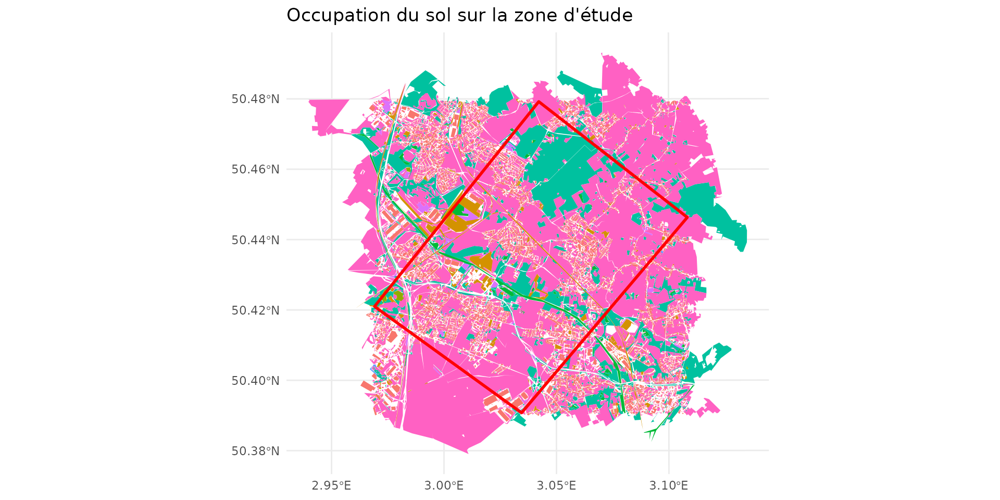
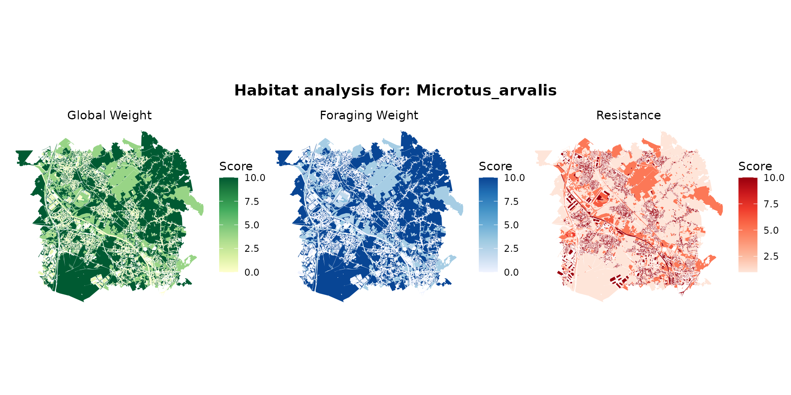
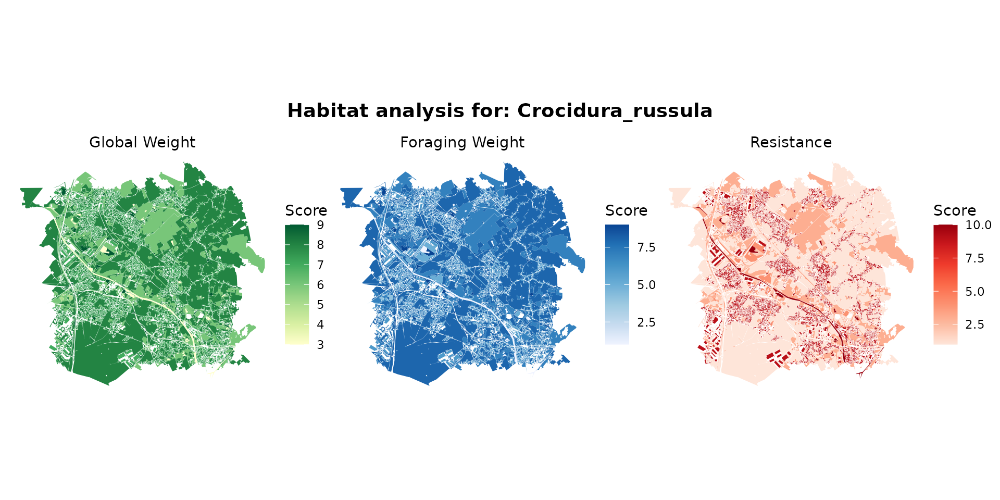
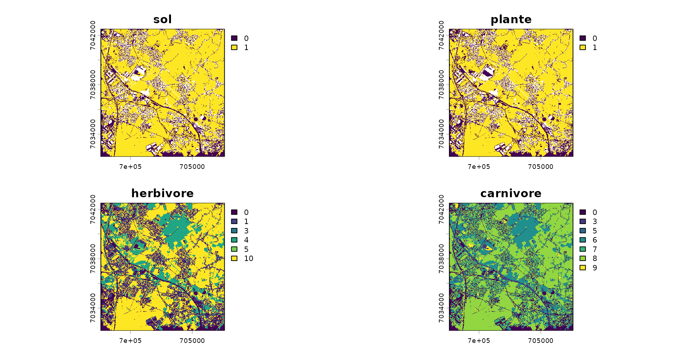
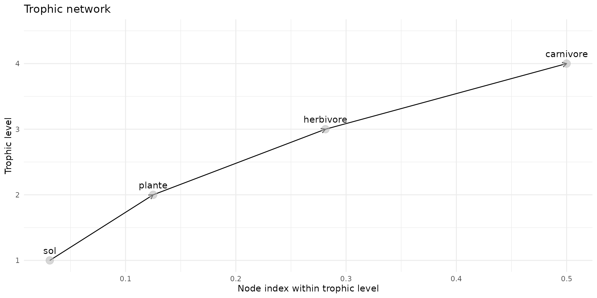
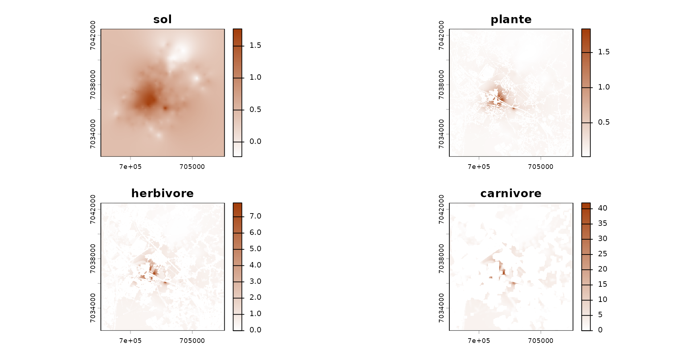
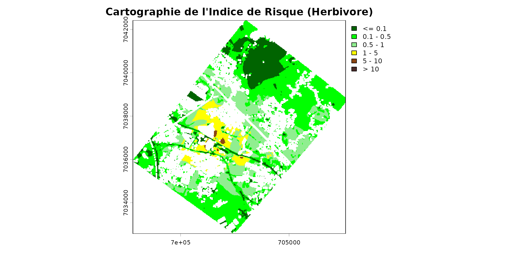

Getting Started: Vue d'ensemble de spacemodR
Getting_Started_FR.RmdBienvenue dans spacemodR ! Ce guide de démarrage
(“Getting Started”) vous offre une vue d’ensemble des capacités du
package.
L’objectif de spacemodR est de réaliser des
Évaluations des Risques Écologiques (ERE) spatialement
explicites. Plutôt que de calculer un risque global sur un
site, nous intégrons la géographie réelle du paysage pour cartographier
les flux.
Pour cela, nous suivons un pipeline logique et modulaire :
- Le Paysage et les Habitats : Définir la zone d’étude et la capacité des espèces à y vivre.
- Le Réseau Trophique : Définir “qui mange qui” (les proies et les prédateurs).
- Le Spacemodel : L’objet central qui fusionne l’espace et les relations écologiques.
- La Dispersion : Modéliser le mouvement des animaux dans le paysage.
- Le Transfert et l’Exposition : Suivre la propagation d’un contaminant à travers le réseau trophique.
- La Cartographie du Risque : Générer des indices de risque spatiaux (ex: Eco-SSL).
Commençons par charger les packages nécessaires :
1. Le Paysage et les Habitats
Tout commence par la géographie. spacemodR facilite
l’extraction et la manipulation de données d’occupation du sol (comme la
base OCS-GE en France) pour une zone d’intérêt (Region of Interest -
ROI).
Nous chargeons dans un premier temps les données d’un site dans le
nord de la France. Ici, on utilise les présente
(ocsge_metaleurop et roi_metaleurop) ainsi que
le package ggplot2 pour la représentation.
# Charger une zone d'étude (ex: site de Metaleurop) et les données d'occupation du sol
data("roi_metaleurop")
data("ocsge_metaleurop")
ggplot() +
theme_minimal() +
geom_sf(data=ocsge_metaleurop, aes(fill=code_cs), color=NA) +
geom_sf(data=roi_metaleurop, fill=NA, color="red", size=1) +
theme(legend.position = "none") +
labs(title="Occupation du sol sur la zone d'étude")
À partir de ces polygones, nous définissons des habitats pour nos espèces. Un habitat est une combinaison de zones favorables, défavorables ou neutres. Ces géométries sont ensuite transformées en grilles régulières (rasters) prêtes pour la modélisation.
# Exemple: Chargement d'un raster de la concentration de fond d'un contaminant (Cadmium)
ground_cd <- load_raster_extdata("ground_concentration_cd_compressed.tif")
# Définition d'habitat à partir des code OSGE (qui sont dans le tableau `ocsge_metaleurop`)
layer_soil_natural = ocsge_metaleurop$code_cs %in%
c("CS1.2.1","CS2.1.1.1","CS2.1.1.2","CS2.1.1.3", "CS2.1.2","CS2.1.3","CS2.2.1","CS2.2.3")
layer_soil_artificial = ocsge_metaleurop$code_cs %in%
c("CS1.1.1.1", "CS1.1.1.2", "CS1.1.2.1")
layer_plant = ocsge_metaleurop$code_cs %in%
c("CS2.1.1.1", "CS2.1.1.2", "CS2.1.1.3", "CS2.1.3", "CS2.2.1")
habitat_sol = habitat() |>
add_habitat(ocsge_metaleurop[layer_soil_natural,]) |>
add_nohabitat(ocsge_metaleurop[layer_soil_artificial,])
plot(habitat_sol)
habitat_plante = habitat() |>
add_habitat(ocsge_metaleurop[layer_plant,]) |>
add_nohabitat(ocsge_metaleurop[layer_soil_artificial,])Certaines de ces spécificités d’habitats sont incluses dans le projet. Pour l’instant, 935 espèces dont 499 oiseaux, 215 mammifères, 136 reptiles et 85 amphibiens.
Par exemple pour le campagnol des champs (Microtus arvalis):
microtus_hab <- join_ocsge_species(ocsge_metaleurop, "Microtus_arvalis")
plot_species_habitat(microtus_hab)
… et la musaraigne grise commune (Crocidura russula):
crocidura_hab <- join_ocsge_species(ocsge_metaleurop, "Crocidura")
plot_species_habitat(crocidura_hab)
Pour comprendre les 3 cartes en détails, ce référer à la page Habitat. Brièvement:
- Global weight (pondération globale), c’est la capacité d’accueil (ou l’attractivité générale) d’un milieu pour l’espèce.
- Foraging weight (pondération de recherche de nourriture) : c’est l’attractivité trophique du milieu. Un animal ne se nourrit pas forcément partout où il vit.
- Resistance (résistance au déplacement / Friction spatiale) : c’est le coût énergétique ou le danger lié à la traversée de ce milieu. Ce paramètre est utilisé par les modèles de connectivité et de dispersion (comme l’algorithme Omniscape abordé plus tard).
# nous utilise le poids `weight_global` comme habitat
habitat_herbivore <- habitat(microtus_hab, habitat=TRUE, weight=microtus_hab$weight_global)
habitat_carnivore <- habitat(crocidura_hab, habitat=TRUE, weight=crocidura_hab$weight_global)A cette étape, maintenant que les habitats sont défini, on rasterize
les habitats selon une couche par défaut, ici cd_ground,
qui va permettre d’avoir la même grille paysagère afin de pouvoir
superposer toutes les couches.
# On initialise des grilles d'habitats (raster) pour chaque maillon
rast_sol <- habitat_raster(ground_cd, habitat_sol)
rast_plant <- habitat_raster(ground_cd, habitat_plante)
rast_herbivor <- habitat_raster(ground_cd, habitat_herbivore)
rast_carnivor <- habitat_raster(ground_cd, habitat_carnivore)
# On créé le `raster_stack` des habiats
stack_habitat <- raster_stack(
raster_list = list(rast_sol, rast_plant, rast_herbivor, rast_carnivor),
names = c("sol", "plante", "herbivore", "carnivore")
)
terra::plot(stack_habitat)
2. Le Réseau Trophique
Une fois nos cartes créées, nous devons relier ces couches par des
interactions écologiques. spacemodR utilise un
Graphe Orienté Acyclique (DAG) pour définir les proies,
les prédateurs, et le flux de l’énergie (ou des contaminants).
# Construction du réseau trophique
trophic_df <- trophic() |>
add_link(from = "sol", to = "plante") |>
add_link(from = "plante", to = "herbivore") |>
add_link(from = "herbivore", to = "carnivore")
# Visualisation des liens trophiques
plot(trophic_df)
3. Le Spacemodel : l’objet central
Le spacemodel est le cœur du package. Il lie
intrinsèquement la dimension spatiale (le raster_stack) et
la dimension écologique (le graphe trophic_df).
Toute opération ultérieure (dispersion, exposition) utilisera cet objet pour garantir la cohérence des calculs.
spcmdl <- spacemodel(stack_habitat, trophic_df)
print(spcmdl)
#> class : SpatRaster
#> size : 415, 401, 4 (nrow, ncol, nlyr)
#> resolution : 24.93766, 24.93976 (x, y)
#> extent : 697602.7, 707602.7, 7032171, 7042521 (xmin, xmax, ymin, ymax)
#> coord. ref. : RGF93 v1 / Lambert-93 (EPSG:2154)
#> source(s) : memory
#> varnames : ground_concentration_cd_compressed
#> ground_concentration_cd_compressed
#> ground_concentration_cd_compressed
#> ground_concentration_cd_compressed
#> names : sol, plante, herbivore, carnivore
#> min values : 0, 0, 0, 0
#> max values : 1, 1, 10, 94. La Dispersion et le Mouvement
Les animaux ne sont pas statiques. L’exposition d’un individu dépend
de ses déplacements (son rayon de recherche de nourriture, sa
dispersion). spacemodR permet de simuler ces mouvements,
par exemple via des noyaux de convolution (kernels) ou la théorie des
circuits (Omniscape).
# Calcul des noyaux de dispersion en fonction d'un rayon de mobilité (ex: en pixels)
k_herb <- compute_kernel(radius=50, GSD=25, size_std=0.5)
k_carn <- compute_kernel(radius=150, GSD=25, size_std=0.5)
# Application de la dispersion sur le spacemodel
spcmdl_dispersal <- spcmdl |>
dispersal("herbivore", method="convolution", method_option=list(kernel=k_herb)) |>
dispersal("carnivore", method="convolution", method_option=list(kernel=k_carn))
# Note : le sol et les plantes sont évidemment statiques et ne dispersent pas.5. Exposition et Transfert des Contaminants
Maintenant que le système est en place, nous pouvons “injecter” la
concentration de notre polluant dans le sol, et modéliser sa
bioconcentration et sa bioaccumulation jusqu’au sommet de la chaîne
alimentaire grâce à la fonction transfer().
# 1. On assigne la grille de concentration réelle dans la couche "soil"
spcmdl_dispersal[["sol"]][] <- ground_cd
# 2. On définit les équations de transfert (Facteurs de Bioaccumulation / Bioconcentration)
intakes <- intake(spcmdl_dispersal,
"sol -> plante" = ~ 10^x / 32, # Equation spécifique pour les plantes
"plante -> herbivore" = 0.5, # Facteur simple pour l'herbivore
"herbivore -> carnivore" = 0.8, # Facteur simple pour le carnivore
default = 1
)
# 3. On rassemble nos noyaux de dispersion pour le calcul de l'exposition
kernels <- list(sol = NA, plante = NA, herbivore = k_herb, carnivore = k_carn)
# 4. Calcul du transfert global dans l'écosystème
spcmdl_transfer <- transfer(spcmdl_dispersal, kernels, intakes)
# Visualisation de la contamination absorbée par le carnivore
color_transfer <- colorRampPalette(c("white", "#A33D0A"))(255)
terra::plot(spcmdl_transfer, col=color_transfer)
6. Cartographie du Risque Écologique
L’étape finale de l’ERA consiste souvent à générer un Indice de Risque (par exemple, le Quotient de Danger ou l’approche Eco-SSL). Cela permet de cartographier les “Hot-Spots” où les seuils de toxicité de référence sont dépassés.
# Définition des classes de risque (de "Sûr" à "Risque Très Élevé")
breaks_risk <- c(-Inf, 0.1, 0.5, 1, 5, 10, Inf)
cols_risk <- c(
"darkgreen", # 0 - 0.1 (Pas de risque)
"green", # 0.1 - 0.5
"lightgreen", # 0.5 - 1 (Limite)
"yellow", # 1 - 5 (Risque modéré)
"saddlebrown", # 5 - 10 (Risque fort)
"#4A2C2A" # > 10 (Risque très sévère)
)
# Projection du risque sur la zone d'étude
poly_vect <- terra::project(terra::vect(roi_metaleurop), terra::crs(spcmdl_transfer))
rast_crop <- terra::crop(spcmdl_transfer[["herbivore"]], poly_vect)
rast_final <- terra::mask(rast_crop, poly_vect)
terra::plot(rast_final,
breaks = breaks_risk,
col = cols_risk,
main = "Cartographie de l'Indice de Risque (Herbivore)")
Prochaines Étapes
Vous venez de voir l’ensemble du pipeline spacemodR en
action ! Pour aller plus loin et configurer finement chaque étape, nous
vous invitons à consulter nos guides spécialisés :
- 🧩️ Habitat Layer : Construire des cartes de résistance et d’habitats complexes depuis des vecteurs.
- 🧩️ Landscape Connectivity : Intégrer la théorie des circuits (Omniscape) pour le mouvement des grands mammifères.
- 🎯️ Tuning Parameters: Faire l’inférence des paramètres (méthodes Bayesiennes).
- 🧪 The Example Zoo : Explorer des cas d’études réels (comme le modèle Berisp complet).